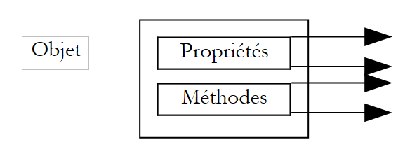
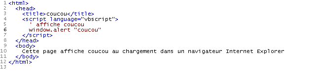
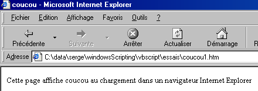
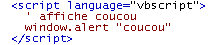
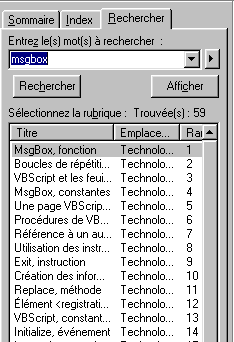

2. Contesti di esecuzione VBSCRIPT
2.1. Introduzione
Un programma VBScript non viene eseguito direttamente in Windows, ma all'interno di un contenitore che gli fornisce un contesto di esecuzione e una serie di oggetti a esso specifici. Inoltre, il programma VBScript può utilizzare oggetti resi disponibili dal sistema Windows, noti come oggetti ActiveX.
 |
In questo documento utilizzeremo due contenitori: Windows Scripting Host, comunemente denominato WSH, e il browser Internet Explorer, di seguito talvolta indicato come IE. Ne esistono molti altri. Ad esempio, le applicazioni MS-Office fungono da contenitori per una variante di VB chiamata VBA (Visual Basic for Applications). Esistono inoltre molte applicazioni Windows che consentono agli utenti di superare i limiti dell’applicazione stessa, permettendo loro di sviluppare programmi che girano all’interno dell’applicazione e utilizzano i suoi oggetti specifici.
Il contenitore in cui viene eseguito il programma VBScript svolge un ruolo cruciale:
- gli oggetti messi a disposizione del programma VBScript dal contenitore variano da un contenitore all'altro. Ad esempio, WSH fornisce a un programma VBS un oggetto chiamato WScript, che dà accesso, ad esempio, alle condivisioni di rete e alle stampanti del computer host. IE, d'altra parte, fornisce al programma VBS un oggetto chiamato Document, che rappresenta l'intero documento HTML visualizzato. Il programma VBS può quindi manipolare questo documento. Excel, d'altra parte, fornisce a un programma VBA oggetti che rappresentano cartelle di lavoro, fogli di lavoro, grafici, ecc. — in pratica, tutti gli oggetti gestiti da Excel.
- Sebbene gli oggetti in un contenitore conferiscano a un programma VBScript la sua piena potenza, a volte possono limitare alcune aree della sua funzionalità. Ad esempio, un programma VBScript in esecuzione nel browser IE non può accedere al disco del computer host, per motivi di sicurezza.
Pertanto, quando si parla di programmazione VBScript, è necessario specificare in quale contenitore il programma è in esecuzione.
Su Windows, VBScript non è l'unico linguaggio che può essere utilizzato nei contenitori WSH o IE. Ad esempio, è possibile utilizzare JScript (=JavaScript), PerlScript (=Perl), Python, ecc. Molti di questi linguaggi sembrano, a prima vista, superiori a VBScript. Tuttavia, VBScript presenta alcuni vantaggi significativi:
- VB e le sue varianti VBScript e VBA sono molto diffusi sui computer Windows. Conoscere questo linguaggio sembra essenziale.
- Sono gli oggetti a disposizione di un programma, piuttosto che il linguaggio stesso, a renderlo potente. Molti di questi oggetti sono forniti dai contenitori, non dai linguaggi stessi.
Uno svantaggio di VBScript è che non è portabile su sistemi diversi da Windows, come Unix. I suoi concorrenti — JavaScript, Perl e Python — lo sono. Se è necessario lavorare su sistemi eterogenei, può essere vantaggioso o addirittura essenziale utilizzare lo stesso linguaggio su sistemi diversi.
2.2. Il contenitore WSH
Il contenitore WSH (Windows Scripting Host) consente ai programmi scritti in vari linguaggi, come VBScript, JavaScript, PerlScript, Python e altri, di essere eseguiti all'interno di Windows. Esiste uno standard che deve essere seguito affinché un linguaggio possa essere utilizzato all'interno di WSH. Qualsiasi linguaggio conforme a questo standard è idoneo all'esecuzione all'interno di WSH. È ipotizzabile che l'elenco dei linguaggi eseguibili in WSH possa ampliarsi. Un contenitore fornisce ai programmi che esegue degli oggetti che ne determinano la vera potenza. Ciò tende a sfumare le differenze tra i linguaggi, poiché tutti utilizzano lo stesso insieme di oggetti. La scelta di un linguaggio piuttosto che un altro può quindi diventare una questione di preferenza personale piuttosto che di prestazioni.
I programmi in WSH vengono eseguiti utilizzando due file eseguibili: wscript.exe e cscript.exe. wscript.exe si trova in genere nella directory di installazione di Windows, solitamente indicata come %windir%:
C:\ >echo %windir%
C:\WINDOWS
C:\>dir c:\windows\wscript.exe
WSCRIPT EXE 123 280 19/09/01 11:54 wscript.exe
L'exécutable cscript.exe se trouve lui sous %windir%\command :
C:\>dir c:\windows\cscript.* /s
Répertoire de C:\WINDOWS\COMMAND
CSCRIPT EXE 102 450 26/06/01 17:49 cscript.exe
La "w" in wscript sta per Windows, mentre la "c" in cscript sta per console. Uno script può essere eseguito utilizzando sia wscript che cscript. La differenza sta nel modo in cui i messaggi vengono visualizzati sullo schermo:
- wscript li visualizza in una finestra
- cscript li visualizza sullo schermo
Ecco uno script chiamato hello.vbs che visualizza "hello" sullo schermo:

Apriamo una finestra DOS ed eseguiamolo in successione con wscript e cscript:
DOS>wscript coucou.vbs

DOS>cscript coucou.vbs
Microsoft (R) Windows Script Host Version 5.6
Copyright (C) Microsoft Corporation 1996-2001. Tous droits réservés.
coucou
La differenza tra le due modalità è chiaramente visibile sopra. In questo documento useremo quasi esclusivamente la modalità console di cscript. Questa è la modalità adatta alle cosiddette applicazioni "batch", ovvero applicazioni senza interazione dell'utente tramite la tastiera. Notate due punti nei risultati precedenti:
- Abbiamo ipotizzato che i file eseguibili wscript.exe e cscript.exe fossero entrambi nel "PATH" del computer, il che permette di avviarli semplicemente digitando i loro nomi. Se così non fosse, avremmo dovuto scrivere qui:
- Si noti che la versione di WSH utilizzata in questo esempio e nel resto del documento è la versione 5.6.
- Il file sorgente dello script ha l'estensione .vbs. Questa è l'estensione per uno script VBScript; uno script JavaScript è indicato dall'estensione .js.
Il programma cscript dispone di varie opzioni di avvio, che possono essere visualizzate eseguendo cscript senza argomenti:
L'argomento //nologo sopprime la visualizzazione del banner WSH:
2.3. La struttura di uno script WSH
Abbiamo appena visto il nostro primo script: hello.vbs

Abbiamo accennato al fatto che l'estensione .vbs indica uno script VBScript. Questo non è un requisito obbligatorio. Avremmo potuto inserire lo script in un file con estensione .wsf nella seguente forma, più complessa:

L'esecuzione di questo script produce il seguente output:
Uno script WSH può combinare più linguaggi:

L'esecuzione di questo script produce il seguente risultato:
Prenderemo nota dei seguenti punti:
- Il contenitore WSH non è legato a un linguaggio specifico. Uno script WSH può mescolare linguaggi all'interno di un file con estensione .wsf
- Lo script è quindi racchiuso tra i tag <job id="..."> ... </job>
- All'interno dell'applicazione (=job), i linguaggi utilizzati dalle diverse sezioni di codice sono contrassegnati con <script language="...."> .... </script>
- Questo linguaggio di marcatura ha un nome: XML, abbreviazione di eXtended Markup Language. XML non definisce alcun tag in sé, ma piuttosto regole per l'organizzazione dei tag. In questo caso, dovremmo quindi dire che il linguaggio di marcatura utilizzato in uno script WSH segue lo standard XML.
D'ora in poi, useremo esclusivamente VBScript nei file .vbs.
2.4. L'oggetto WSCRIPT
Il contenitore WSH fornisce agli script che esegue un oggetto chiamato wscript. Un oggetto ha proprietà e metodi:
 |
Un oggetto Obj possiede proprietà Pi che ne determinano lo stato. Pertanto, un oggetto termometro può avere una proprietà temperatura. Questa proprietà è un aspetto dello stato del termometro. Un altro potrebbe essere la temperatura massima Tmax che è in grado di sopportare.
L'oggetto Obj può avere metodi Mj che consentono ad agenti esterni di:
- determinarne lo stato
- modificarne lo stato
Pertanto, il nostro termometro, se elettronico, potrebbe avere un metodo turnOn che lo accenderebbe, un altro turnOff che lo spegnerebbe e un altro display che mostrerebbe la temperatura di equilibrio una volta raggiunta. In termini di programmazione, un metodo è una funzione in grado di accettare argomenti e restituire risultati.
In VBScript, le proprietà Pi di un oggetto Obj sono scritte come Obj.Pi, mentre i metodi Mj sono scritti come Obj.Mj. L'oggetto wscript in WSH è un oggetto importante per i metodi che mette a disposizione degli script. Ad esempio, il suo metodo echo consente di visualizzare un messaggio. La sintassi di questo metodo è la seguente:
I valori degli argomenti arg1, arg2, ..., argn vengono quindi visualizzati in una finestra (se eseguiti tramite wscript) o sullo schermo (se eseguiti tramite cscript in DOS).
2.5. Il contenitore Internet Explorer
Abbiamo accennato in precedenza al fatto che Internet Explorer può fungere da contenitore per un VBScript. Dimostriamolo con un semplice esempio. Di seguito è riportata una pagina HTML (HyperText Markup Language) denominata coucou2.htm che non contiene alcun VBScript.
21

Caricandola direttamente in Internet Explorer (File/Apri) si ottengono i seguenti risultati:
 |
Il contenuto del file coucou2.htm ci mostra che l'HTML è un linguaggio di marcatura. Conoscere l'HTML significa conoscere questi tag. Il loro scopo principale è indicare al browser come visualizzare un documento. L'HTML non segue rigorosamente lo standard XML, ma è simile ad esso.
Nel file coucou2.htm sono presenti due informazioni contrassegnate con i numeri 1 e 2. Le abbiamo incluse anche nella visualizzazione finale. Il tag <title>...</title> ha fatto sì che l'informazione 1 venisse inserita nella barra del titolo del browser, mentre il tag <body>..</body> ha fatto sì che l'informazione 2 venisse inserita nell'area del documento del browser.
Non approfondiremo ulteriormente l'HTML. Modifichiamo il file coucou2.htm aggiungendo un VBScript e rinominiamolo coucou1.htm:

Il VBScript è stato inserito tra i tag <head>...</head>. Avrebbe potuto essere inserito altrove. Visualizza "hello" al primo caricamento della pagina. In questo caso, il browser deve essere Internet Explorer, poiché solo questo browser è un contenitore predefinito per i VBScript. La visualizzazione risultante è la seguente:

seguito dalla normale visualizzazione della pagina:

Lo script eseguito era il seguente:

Mentre il contenitore WSH forniva allo script un oggetto denominato wscript che consentiva l’output tramite il metodo echo, in IE lo script riceve un oggetto window che consente l’output tramite il metodo alert. Pertanto, per visualizzare "hello", in WSH scriviamo wscript.echo "hello" e in IE window.alert "hello". Possiamo anche dimostrare qui che, di fatto, all’interno del contenitore IE è possibile utilizzare più linguaggi. Riprenderemo l'esempio già presentato in WSH all'interno di una pagina denominata hello3.htm:

Quando IE carica questa pagina, visualizza innanzitutto tre finestre informative:
 |  |  |
prima di visualizzare la pagina finale:

2.6. Guida di WSH
WSH include un sistema di guida che di solito si trova nella cartella "C:\Program Files\Microsoft Windows Script\ScriptDocs". Per la versione 5.6 di WSH, il file della guida si chiama "SCRIPT56.CHM". Basta fare doppio clic su questo file per accedere alla guida. Può essere utile creare un collegamento sul desktop.
Una volta avviata, vedrai qualcosa di simile a questo:

Contiene la guida per il contenitore WSH e per i linguaggi VBScript e JavaScript. È uno strumento indispensabile sia per i principianti che per i programmatori esperti. Esistono diversi modi per utilizzare questa guida:
- Non sei ancora sicuro di cosa stai cercando. Vuoi semplicemente esplorare ciò che è disponibile. In tal caso, puoi utilizzare la scheda Indice in alto. Ad esempio, puoi vedere cosa è disponibile per VBScript:

Troverai molte informazioni nella guida di VBScript che non sono incluse in questo documento.
- Puoi cercare qualcosa di specifico, come ad esempio come utilizzare la funzione MsgBox di VBScript. In tal caso, utilizza la scheda "Cerca":

La guida mostra tutti gli argomenti relativi al termine di ricerca. In genere, i primi argomenti suggeriti sono i più pertinenti. È proprio questo il caso, dove il primo argomento suggerito è quello corretto. Basta fare doppio clic su di esso per visualizzare le informazioni relative a quell'argomento: